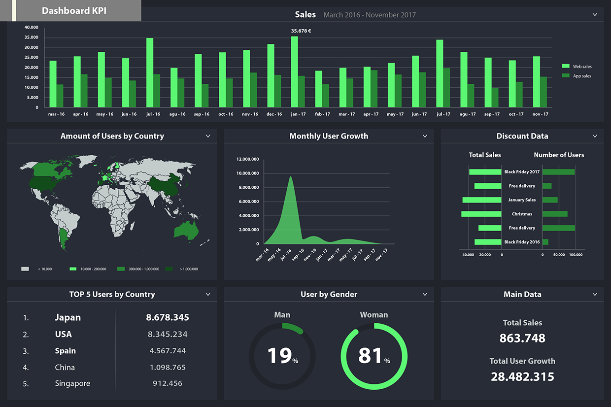

Мои работы ↘

Dashboard аналитики
Next.js, Tailwind, Chart.js

REST/GraphQL API
Node.js, Fastify, GraphQL Yoga
Сервис очередей
BullMQ, Redis, TypeScript
Изображение отсутствует
UI библиотека компонентов
React, Storybook

Веб‑чат с WebSocket
Node.js, WS, Postgres
Мобильная PWA
React, Service Worker